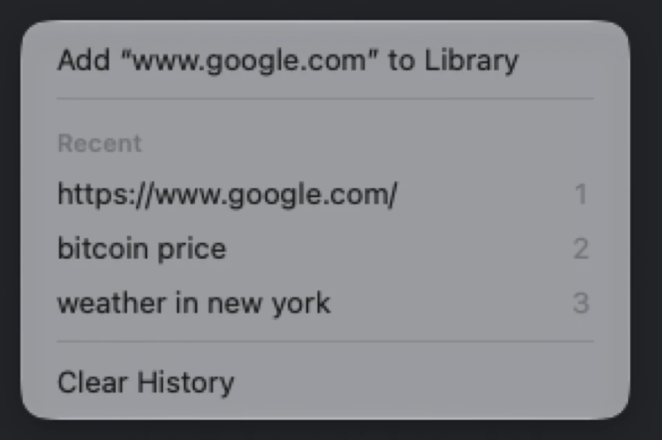
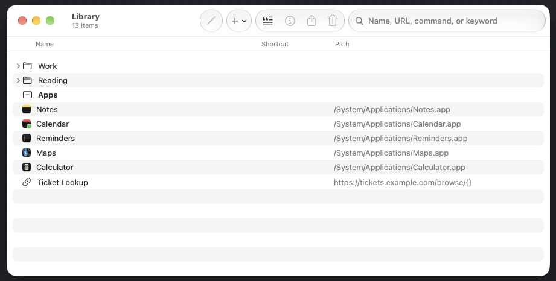
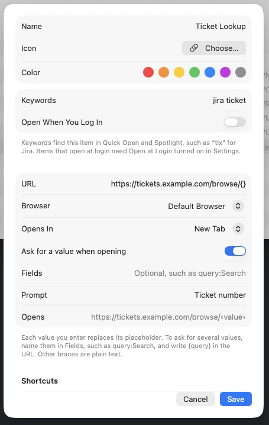
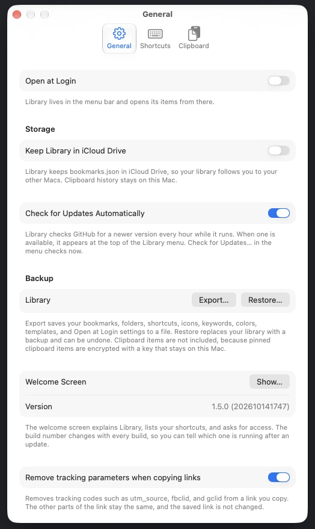

Library
Everything you open and copy, one shortcut away.
Open items from the menu bar.
Bookmarks, apps, folders, terminal commands, and clipboard history.
Library lives in your menu bar. Keep your bookmarks, apps, folders, and terminal commands in one place, open any of them from the menu or a shortcut, and bring back anything you copied a moment ago.
Learn more about LibraryFind anything with Control-Space.
Search your library from anywhere on your Mac.
Press Control-Space anywhere, then type a few words from a name, keyword, URL, or folder.
- Press Return to open the result, or Tab for other options.
- Type or paste a web address to open it, or add it to your library.
- Press ⌘1 through ⌘9 to open the first nine results.
Keep what you copy.
Copies you can paste again.
Library remembers what you copy: text, links, images, and files.
- Pin an item to keep it after you quit.
- Select an item in Quick Open and press Space to preview it in Quick Look.
- Build a paste queue. Paste several items one at a time, in order.
- Copy as lower or upper case, trimmed, with its lines joined, or with smart punctuation. Copy a bookmark as a Markdown link.
- Type
from Safariin Quick Open to see only what you copied in Safari.

Smart actions for what you copy.
Useful actions for the text you copy.
Text with an address, a phone number, or a date gets actions in Quick Open.
Detection happens on this Mac. Press Tab to see the actions.
- Addresses: Open in Maps.
- Phone numbers: Copy Phone Number.
- Dates: Add to Calendar.
- Smart Punctuation: copy text with smart punctuation from Quick Open, under Tab.
Snippets for text you type often.
Text you use again, found by name.
Keep text you use often, such as an address or a standard reply.
- Add one from File > New Snippet… or the Snippets button in the Library window.
- Find it by name or keyword in Quick Open, then press Return.
Snippets are plain text and not encrypted, so don't keep passwords in one.
Learn more about snippetsOrganize your library in one window.
Edit your whole library together.
Choose Edit Library… to manage folders, bookmarks, apps, and terminal commands in one window.
- Select several rows to edit them at once. Press ⌘Z to undo.
- Find and merge duplicate bookmarks from File > Find Duplicates….
- Import bookmarks from Safari or Chrome with File > Import Bookmarks…. They go into one folder, and ⌘Z undoes the import.
- Open a folder to open all of its bookmarks and apps at once.


Get Info, with notes and templates.
Details for any item, and values you fill in each time.
Press ⌘I on any item to set its name, icon, URL or Terminal Command, keywords, color, and shortcuts.
Put {} in a URL where a value goes. Library asks for it when you open the bookmark.
Read later and take notes.
A reading list next to your bookmarks.
Add a bookmark to the Reading List from its right-click menu.
- Or press Tab in Quick Open.
- Unread bookmarks show first. Removing a bookmark from the list keeps it in your library.
- Write a note on any item in Get Info. Quick Open shows the note under the item's name.
Change settings in one place.
Startup, updates, backup, and link cleaning in one place.
Press ⌘, to open Settings.
- General holds startup, iCloud Drive, updates, backup and restore, and link cleaning.
- Shortcuts sets the global keys.
- Clipboard controls history and pasting.

Quick facts.
Shortcuts, services, updates, and locks.
Shortcuts
Set global keys, modified clicks, and hot corners.
Services
Add a selected link from any app with Services.
Spotlight
Find bookmarks, apps, and commands in Spotlight.
URL scheme
Open items, the menu, or Quick Open with library:// links.
Touch ID lock
Require Touch ID or your password to show pinned items.
Keychain-protected pins
Pinned clipboard items are encrypted with a key in your Keychain.
Check for Updates
Check GitHub for new releases, and install them when you choose.
Your library stays on your Mac.
Clipboard history never leaves this Mac.
Your library and clipboard history stay on your Mac. Pinned clipboard items are encrypted with a key in your Keychain. Library skips anything a password manager marks as private.
- Library connects to the internet only for site icons and update checks, plus two optional features you turn on in Settings: link checks and copied GIFs.
- Require Touch ID or password to show pinned items, in Settings > Clipboard.
Install in one command.
Check for Updates installs new versions.
Paste this into Terminal to build and install Library.
It installs Library.app in your Applications folder.
git clone https://github.com/deansasek/library.git "$HOME/Library/Application Support/Library/Source" && "$HOME/Library/Application Support/Library/Source/install.sh"- Operating system
- macOS 26 or later
- Developer tools
- Xcode Command Line Tools
Library checks for updates itself, and Check for Updates… installs them. Your library and clipboard history are kept.